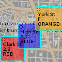
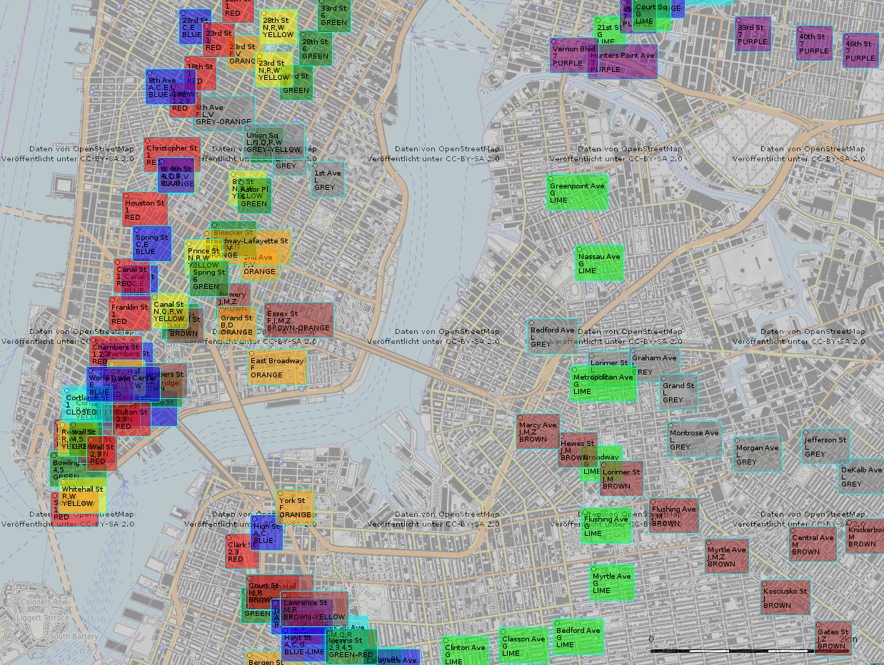

sQLshell als Datenlieferant für EBMap4D

Ich habe neulich beschrieben, welche Vorbereitungen ich traf, um mein Geoinformationssystem EBMap4D mit der sQLshell zu integrieren.
Ich habe mich noch nicht entschieden, wie diese Integration aussehen wird - Schaffe ich einen eigenen Layer-Typ in EBMap4D oder wird diese enge Kopplung zugunsten einer schmaleren Schnittstelle über - zum Beispiel - GeoJson erfolgen?
Weiterhin denke ich auch darüber nach, wie man die Where-Klausel am einfachsten und wirksamsten automatisiert um Angaben zur aktuell sichtbaren Box in der Kartenansicht ergänzt.
Da die Vorarbeiten zur Test-Infrastruktur so erfolgreich abgeschlossen werden konnten, habe ich sofort einige Tests gemacht, die mich im Moment zu der Kopplung via GeoJson neigen lassen: Bereits die folgende Abfrage gestattet es, gültiges GeoJson zu erzeugen:
SELECT jsonb_build_object(
'type', 'Feature',
'id', gid,
'geometry', st_asgeojson(ST_Transform(geom,4326))::jsonb,
'properties', to_jsonb(public.nyc_subway_stations.*) - 'gid' - 'geom'
) as json from public.nyc_subway_stations;
Die so entstandenen Ergebnisse musste ich lediglich in einen GeoJson-Rumpf einfügen, der wie folgt aussah:
{
"type": "FeatureCollection",
"metadata": {
"importantPropertyNames": [
"routes",
"color"
],
"notSoImportantPropertyNames": [
"borough"
],
"showNamesOnSymbols": "True",
"idPropertyName": "long_name"
},
"features": [
/* hier Ergebnisse aus der Datenbank... */
]
}
Der Entschluss, eventuell doch den Weg der Kopplung über GeoJson zu wählen war durch die Tatsache begründet, dass man auf einfache Art und Weise nicht nur die Daten, sondern auch Styling informationen transferieren kann, wie die folgende, leicht modifizierte Afrage zeigt:
SELECT jsonb_build_object(
'type', 'Feature',
'id', gid,
'style',jsonb_build_object(
'fill',lower(split_part(color,'-',1))
),
'geometry', st_asgeojson(ST_Transform(geom,4326))::jsonb,
'properties', to_jsonb(public.nyc_subway_stations.*) - 'gid' - 'geom'
) as json from public.nyc_subway_stations
Damit, und mit einem kleinen BeanShell-Skript war es mir möglich, direkt eine GeoJson-Datei zu erzeugen, die ich in EBMap4D ohne weitere manuelle Eingriffe sofort einbinden und zur Anzeige bringen konnte:
java.io.File f=new java.io.File("/tmp/nycstations.json");
java.io.PrintWriter pw=new java.io.PrintWriter(f);
pw.println("{ \"type\": \"FeatureCollection\", \"metadata\": { \"importantPropertyNames\": [ \"routes\", \"color\" ], \"notSoImportantPropertyNames\": [ \"borough\" ], \"showNamesOnSymbols\": \"True\", \"idPropertyName\": \"name\" }, \"features\": [");
model=sQLshellAPI.getCurrentlyVisibleShell().getVisibleView().getData();
for(int i=0;i<model.getRowCount();++i)
{
pw.print(model.getValueAt(i,0));
pw.println(",");
}
pw.println("]}");
pw.flush();
pw.close();

U-Bahn-Stationen in New York City eingefärbt nach ihrer Zugehörigkeit zur jeweiligen Linie. Einfärbungen mittels Styling direkt im GeoJson.Artikel, die hierher verlinken
SQLite als Geodatenbank
05.05.2024
Wie bereits in einem früheren Artikel beschrieben treibe ich derzeit Anstrengungen voran, die sQLshell attraktiver für Nutzer zu machen, die mit Geodatenbanken arbeiten.
Die sQLshell ist nun cloudnative!
13.04.2024
Die sQLshell hat eine weitere Integration erfahren - obwohl ich eigentlich selber nicht viel dazu tun musste: Es existiert ein Projekt/Produkt namens steampipe, dessen Slogan ist select * from cloud; - Im Prinzip eine Wrapperschicht um diverse (laut Eigenwerbung mehr als 140) (cloud) data sources.


Vor 5 Jahren hier im Blog
-
Android als Smartcard (NFC) II
05.05.2019
Das letzte Mal war das ganze eher grobe Bastelei. Nachdem ich nun ein neues Smartphone angeschafft habe, wollte ich probieren, ob es inzwischen einfacher funktioniert - und ich wurde über alle Erwartungen hinaus überrascht...
Weiterlesen...
Tags
Android Basteln C und C++ Chaos Datenbanken Docker dWb+ ESP Wifi Garten Geo Git(lab|hub) Go GUI Gui Hardware Java Jupyter Komponenten Links Linux Markdown Markup Music Numerik PKI-X.509-CA Python QBrowser Rants Raspi Revisited Security Software-Test sQLshell TeleGrafana Verschiedenes Video Virtualisierung Windows Upcoming...
Neueste Artikel
- SQLite als Geodatenbank
Wie bereits in einem früheren Artikel beschrieben treibe ich derzeit Anstrengungen voran, die sQLshell attraktiver für Nutzer zu machen, die mit Geodatenbanken arbeiten.
Weiterlesen... - Contributor bei Rosetta Code
Ich habe mich neulich einmal ein wenig auf Rosetta Code umgesehen und bin über die Rubrik Draft Programming Tasks gestolpert, wo ich sofort eine Aufgabe fand, die mich ansprach.
Weiterlesen... - Graphics2D Implementierung für Java mit verlegtem Koordinatenursprung
Es gibt seit vielen Jahren immer mal wieder Leute, die im Internet fragen, ob man in Javas diversen Methoden zum Zeichnen von Graphiken das Koordinatensystem so ändern könnte, dass sich der Koordinatenursprung links unten befindet und die positive y-Achse nach oben weist. Meist sind die Antworten dann, dass eine Affine Transformation eingeschaltet werden solle, die das Bild spiegelt.
Weiterlesen...
Manche nennen es Blog, manche Web-Seite - ich schreibe hier hin und wieder über meine Erlebnisse, Rückschläge und Erleuchtungen bei meinen Hobbies.
Wer daran teilhaben und eventuell sogar davon profitieren möchte, muß damit leben, daß ich hin und wieder kleine Ausflüge in Bereiche mache, die nichts mit IT, Administration oder Softwareentwicklung zu tun haben.
Ich wünsche allen Lesern viel Spaß und hin und wieder einen kleinen AHA!-Effekt...
PS: Meine öffentlichen GitHub-Repositories findet man hier - meine öffentlichen GitLab-Repositories finden sich dagegen hier.